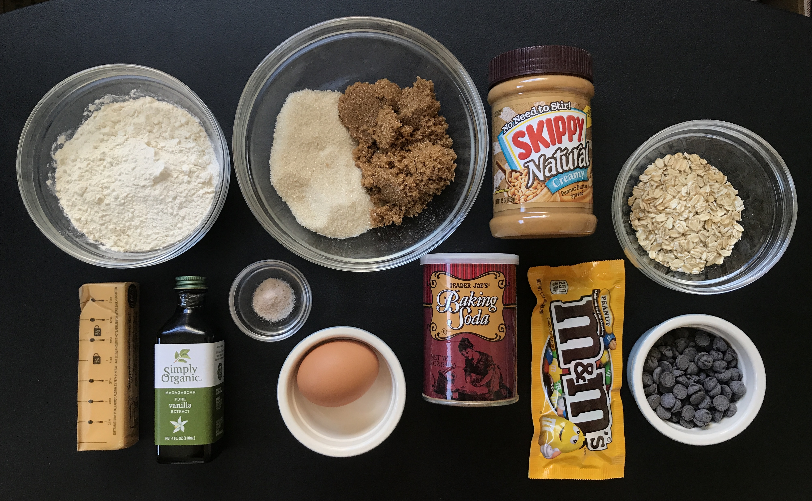

Giant Monster M&M Cookie
Description
Use this cookie dough to make one giant monster cookie or 4 smaller monster cookies. Feel free to substitute the M&Ms or chocolate chips with your favorite add-ins such as chopped peanut butter cups, raisins, white chocolate chips, or chopped nuts.
Ingredients
- 29g unsalted butter, softened to room temperature
- 25g granulated sugar
- 25g brown sugar
- 30g beaten egg (crack an egg, beat it, then use 2 Tbsp)
- 45g all-purpose flour
- 1/2 teaspoon pure vanilla extract
- 2 tablespoon creamy peanut butter
- 2 tablespoon old-fashioned rolled oats
- 1/4 teaspoon baking sodar
- 1/8 teaspoon salt
- 65g M&Ms
- 22g semi-sweet chocolate chips, plus extra for garnish if desired
Instructions
Preheat oven to 325°F (163°C). Line a large baking sheet with parchment paper or a silicone baking mat.
Using a handheld or stand mixer fitted with a paddle or whisk attachment, beat the butter, granulated sugar, and brown sugar together in a large bowl on medium-high speed until combined and creamy.
Add beaten egg, vanilla extract, and peanut butter then beat on medium-high speed until combined. Scrape down the sides and up the bottom of the bowl as needed.
Beat in the flour, oats, baking soda, and salt on low speed.
Then beat in the M&Ms and chocolate chips until combined.
The dough will be sticky. If it’s too sticky to handle, chill in the refrigerator for 5-10 minutes.
Shape into a mound in the center of the lined baking sheet. Bake for 20-30 minutes until edges and top are lightly browned. The center will look super soft, but it will set as the cookie cools. If the cookie isn’t spreading as it bakes, remove it from the oven, then gently flatten with a spoon.
Cool the cookie on the baking sheet for 10 minutes before eating. As it cools, press a few chocolate chips into the top, if desired, for garnish. Cookie freezes well up to 3 months. Thaw at room temperature.
Simple Guacamole
Ingredients
- 1 large ripe hass avocado
- 1/8 cup fresh cilantro
- 1/2 roma tomato
- 1/2 tablespoon lime juice
- 1/4 teaspoon salt
- 1/4 teaspoon black pepper
- 1/8 teaspoon cayenne pepper
Instructions
Roughly chop the parsley, cut the tomato in small cubes, and don't forget to cut the lime!
Now pit and mash the avocado with a folk in a medium bowl.
Put all the ingredients together and season the mixure with salt, pepper, cayenne pepper, and lime juice to your liking.

Mix it well and there's your easy peasy guacamole!
Easy Egg Salad
Ingredients
- 2 extra large eggs
- 2 tablespoon mayonnaise
- 1 tablespoon yellow mustard
- 1/4 teaspoon salt
- 1/4 teaspoon black pepper
- 1 teaspoon dill, fresh or dried
- 2 teaspoon chives, fresh or dried
Instructions
Place egg in a saucepan and cover with cold water. Bring water to a boil and immediately remove from heat. Cover and let eggs stand in hot water for 10 to 12 minutes.
Remove from hot water, cool, peel and chop.
Place the chopped eggs in a bowl, and stir in the mayonnaise, mustard, chives, and dill. Season with salt, pepper.
Stir and serve on your favorite bread or crackers.